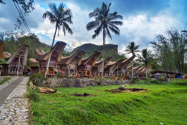
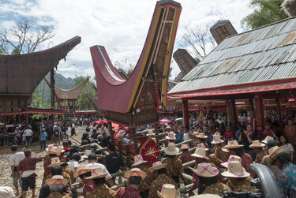
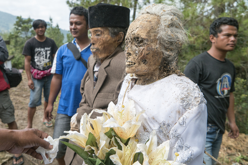
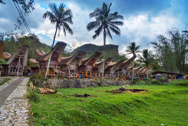
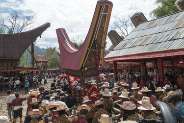
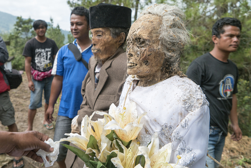

Tana Toraja
Indonesia memang kaya akan adat dan budaya yang menarik mata dunia. Salah satu destinasi wisata Indonesia yang terkenal akan kekayaan tradisi budayanya adalah Kabupaten Tana Toraja.
Selain keindahan arsitektur tradisional rumah tongkonan, wisatawan juga bisa mengamati tradisi unik upacara kematian yang dikenal sebagai Rambu Solo yang biasanya diselenggarakan pada Juli dan Agustus
Keunikan dari tradisi ini menjadikan Tana Toraja sebagai tempat wisata asal Indonesia yang memiliki daya tarik mendunia.
Tana Toraja terkenal dengan masyarakatnya yang memiliki kepercayaan, aturan, serta ritual tradisi yang cukup ketat. Menurut mitos yang telah diceritakan secara turun-temurun, nenek moyang asli masyarakat Toraja dipercaya berasal dari surga dan turun langsung ke bumi dengan menggunakan tangga. Tangga inilah yang kemudian berfungsi sebagai media komunikasi antara nenek moyang dengan Puang Matua (Tuhan dalam kepercayaan masyarakat Toraja).
Tradisi Ma'nene
Salah satu tradisi khas Tana Toraja yang telah menjadi destinasi wisata tradisi populer bagi turis lokal maupun mancanegara adalah tradisi Ma’nene. Tradisi Ma’nene merupakan tradisi mengenang leluhur dengan cara membersihkan dan menggantikan baju mayat para leluhur masyarakat Tana Toraja. Tradisi ini secara khusus dilakukan oleh masyarakat Baruppu yang tinggal di pedalaman Toraja Utara.
Upacara Rambu Solo
Tana Toraja memang terkenal sebagai salah satu daerah di Indonesia yang masih memiliki kepercayaan kuat terhadap hal-hal gaib dan mistis. Oleh karena itu, masyarakat Tana Toraja memiliki banyak kebudayaan dan tradisi yang berkaitan dengan mayat, arwah, atau hal-hal mistis lainnya. Hal inilah yang kemudian menjadi daya tarik bagi para wisatawan baik lokal maupun mancanegara untuk mengunjungi Tana Toraja.
Kete Kesu
Beralih dari destinasi wisata tradisi, Tana Toraja juga memiliki destinasi wisata alam yang tidak kalah uniknya yaitu Kete Kesu. Kete Kesu merupakan kawasan desa wisata di Kabupaten Toraja Utara yang terletak sekitar 4 km di sebelah tenggara Ratenpao.
Desa yang telah menjadi objek wisata ini berada di kawasan perbukitan serta persawahan sehingga pemandangan alam yang dihadirkan pun sangat hijau dan asri. Di Desa Kete Kesu terdapat sebuah kompleks rumah adat Toraja yang disebut Tongkonan. Tongkonan inilah yang seringkali menjadi tempat penyimpanan sementara bagi jenazah yang telah dibungkus kain sebelum dikuburkan.
 




